- Two versions: cream on dark backgrounds, navy on light ones. Nothing in between.
- Leave clear space around it, at least the height of the moon on every side.
- Use the mark on its own where space is small or square: profile images, favicons.
- Below about an inch and a half wide, use the horizontal version or the mark alone.
- Over a photo, place it on a calm, dark area such as sky or water. Never over busy detail.
- Don't recolor it, stretch it, add a shadow, or retype the name in another font.